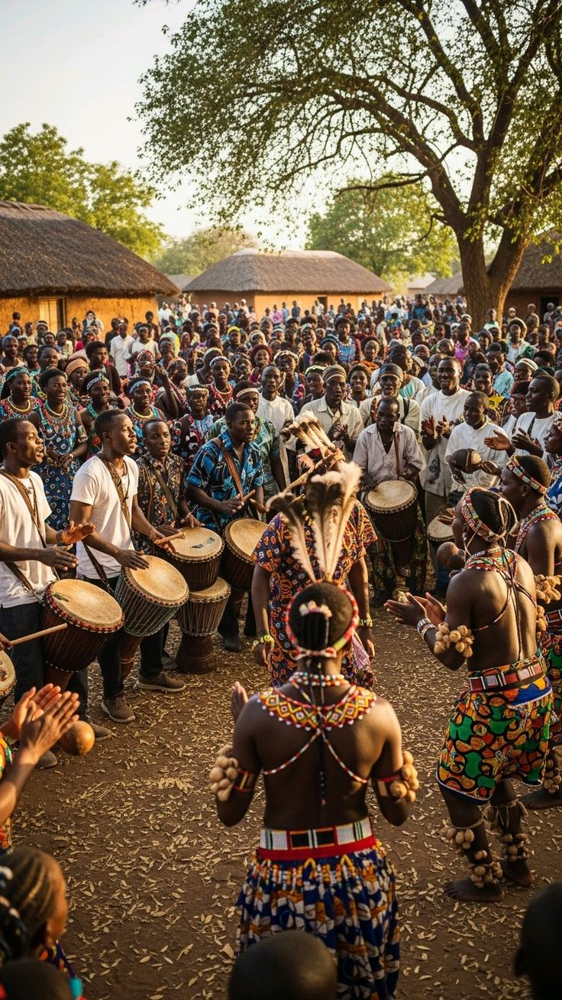
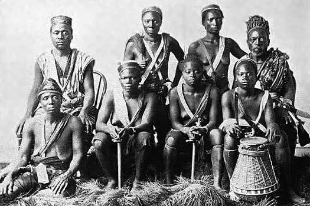

La structure sociale des Pongo-Songo repose sur le système des Bona Mbedi (les enfants de Mbedi).
. La bifurcation familiale : Dans la généalogie Sawa, Mbedi a eu plusieurs fils. Alors que
Ewale (ancêtre des Douala) est la figure la plus connue, Essongo représente une branche qui
a choisi de rester plus proche des milieux fluviaux denses.
. Le lien avec les Pongo de Dibombari Historiquement, ils formaient un seul bloc avec les
Pongo du Moungo. La séparation s'est faite pour des raisons de terroir : une partie a préféré
les terres fertiles de l'intérieur (Dibombari), tandis que les ancêtres des Pongo-Songo ont choisi
l'embouchure de la Sanaga pour la pêche.
. Structure clanique : Ils sont divisés en lignages (familles élargies) qui conservent chacun
un nom d'ancêtre spécifique, garantissant la mémoire de leur appartenance à la grande famille Sawa.
L'année 1578 est une date pivot pour l'ensemble des peuples du Littoral.
. Le grand mouvement : Les Pongo-Songo ne sont pas arrivés seuls. Ils faisaient partie
d'une "vague" migratoire qui fuyait les pressions à l'Est et au Sud (zone Congo/Gabon).
. L'arrivée à Mouanko : Contrairement aux peuples qui se sont installés immédiatement
sur l'estuaire du Wouri, les Pongo-Songo ont poursuivi leur route vers le sud jusqu'à la
Sanaga-Maritime. Leur installation définitive à Mouanko s'est faite après des siècles de
micro-déplacements le long des cours d'eau pour éviter les conflits avec les colons ou d'autres
groupes guerriers.
. Stabilisation : Au XVIIe siècle, leur présence est déjà solidement attestée dans les
zones insulaires qui les protégeaient des incursions terrestres.
Le Pongo est plus qu'un moyen de communication ; c'est un conservatoire de l'histoire Sawa.
. Un archaïsme préservé :Contrairement au Douala qui a beaucoup évolué au contact du
commerce international et des langues européennes, le Pongo parlé à Mouanko a conservé des
formes grammaticales plus anciennes.
. Vocabulaire spécialisé La langue possède un lexique extrêmement riche pour tout ce
qui concerne la navigation fluviale, les marées et la faune des mangroves (les palétuviers).
. Statut actuel : Bien qu'elle soit classée dans le groupe A20 (langues Duala), elle
subit aujourd'hui la pression du français et du douala standard. Elle survit principalement à
travers les chants traditionnels et les palabres des chefs de villages.
Ce nom est une véritable carte d'identité géographique et spirituelle.
. Le Lac Tissongo : Le terme "Songo" est indissociable du lac sacré Tissongo. Ce lieu est
considéré comme le siège des puissances protectrices. En ajoutant "Songo" à leur nom originel "Pongo",
ce peuple a voulu marquer son alliance spirituelle avec cette terre spécifique.
. Distinction identitaire :S'ils s'appelaient simplement "Pongo", ils seraient confondus avec
leurs cousins de Dibombari. Le suffixe "Songo" précise qu'ils sont les "Gens du Lac et du Fleuve", par
opposition aux "Gens de la Terre" ou des plantations.
. Symbiose avec les Malimba :Cette appellation souligne aussi leur fusion culturelle avec les Malimba.
Aujourd'hui, il est difficile de séparer les deux identités tant ils partagent les mêmes zones de vie et
les mêmes rites ancestraux.

